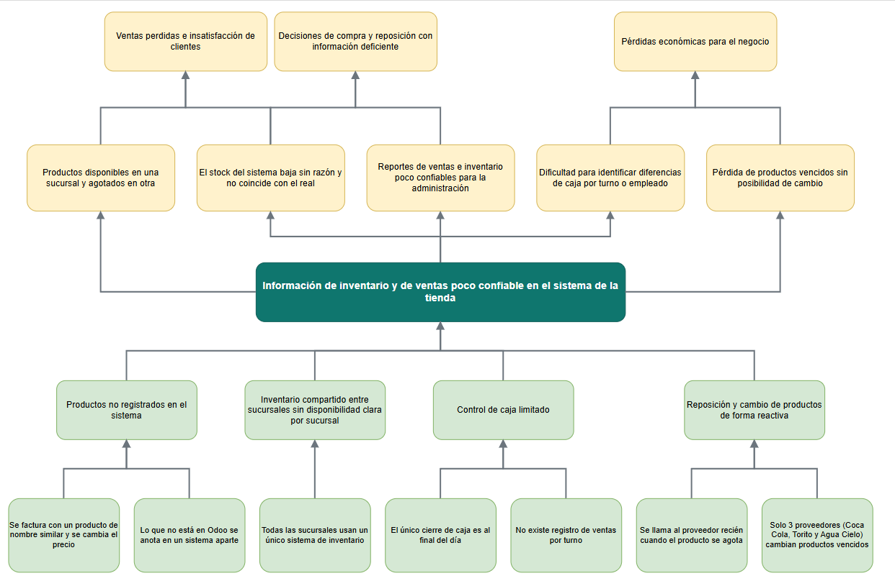
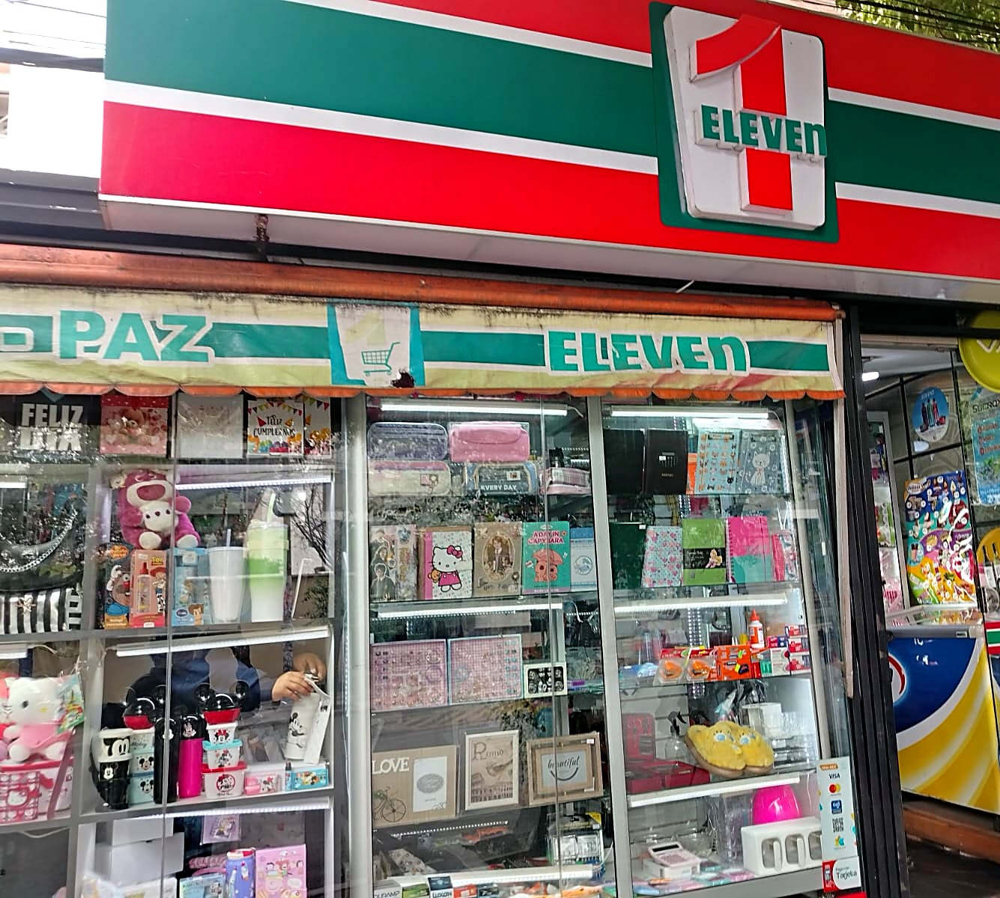
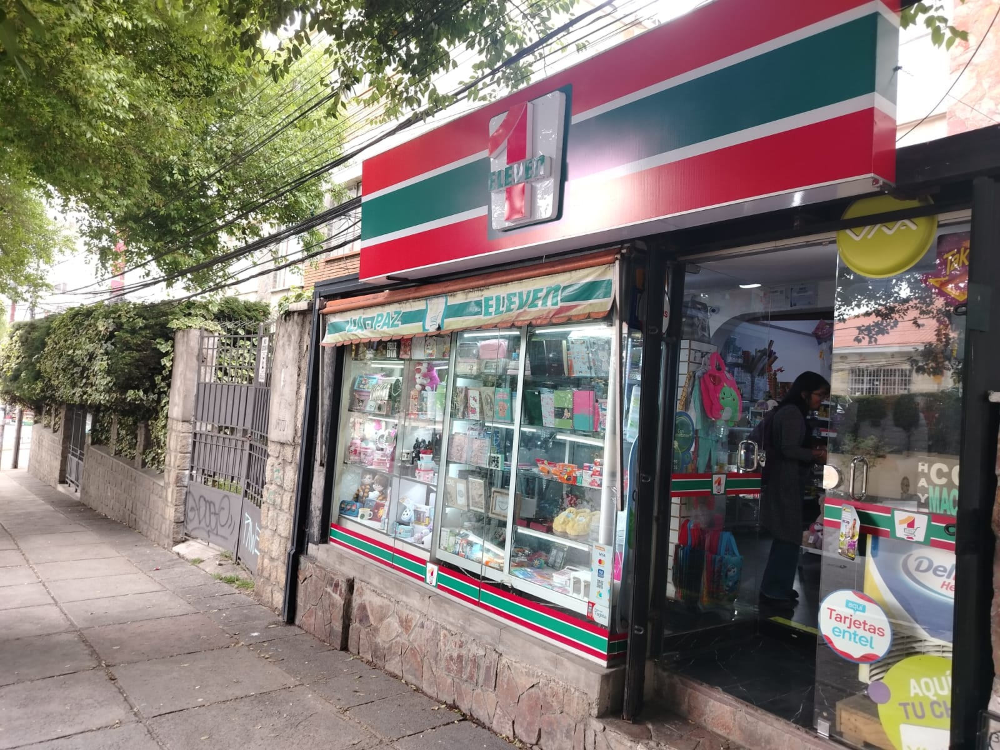
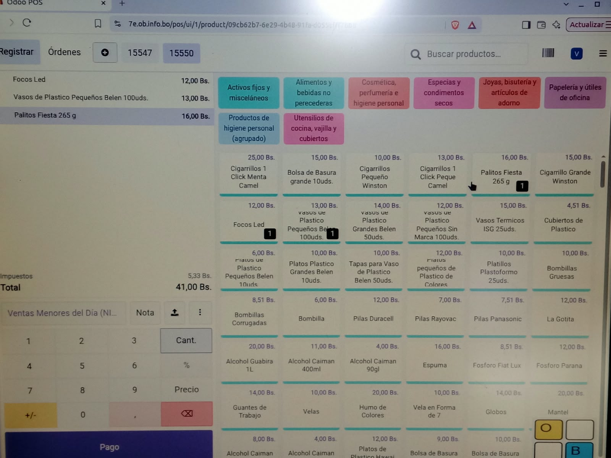
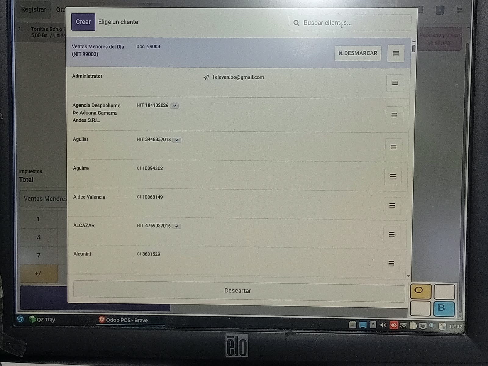

<!doctype html>
<html lang="es">
<head>
  <meta charset="utf-8">
  <meta name="viewport" content="width=device-width, initial-scale=1">
  <title>Eleven | Proyecto de Análisis y Diseño de Sistemas</title>

  <link href="https://cdn.jsdelivr.net/npm/bootstrap@5.3.3/dist/css/bootstrap.min.css" rel="stylesheet">
  <link href="https://cdn.jsdelivr.net/npm/bootstrap-icons@1.11.3/font/bootstrap-icons.min.css" rel="stylesheet">

  <style>
    :root {
      --tienda-primario: #0f766e;
      --tienda-primario-oscuro: #115e59;
      --tienda-acento: #f59e0b;
      --tienda-fondo-suave: #f3f7f6;
    }
    body { background: #fff; }
    .btn-tienda { background: var(--tienda-primario); border-color: var(--tienda-primario); color: #fff; }
    .btn-tienda:hover { background: var(--tienda-primario-oscuro); border-color: var(--tienda-primario-oscuro); color: #fff; }
    .text-tienda { color: var(--tienda-primario) !important; }
    .bg-tienda { background: var(--tienda-primario) !important; }
    .bg-suave { background: var(--tienda-fondo-suave); }

    /* Barra superior */
    .navbar .nav-link { font-weight: 500; }
    .navbar .nav-link.activo, .navbar .dropdown-item.activo { color: var(--tienda-primario); }
    .navbar .nav-link.activo { box-shadow: inset 0 -3px 0 var(--tienda-primario); }
    .navbar .dropdown-item.activo { background: var(--tienda-fondo-suave); font-weight: 600; }
    .dropdown-menu { max-height: 70vh; overflow-y: auto; }

    /* Portada */
    .portada { background: linear-gradient(120deg, var(--tienda-primario) 0%, #134e4a 100%); color: #fff; min-height: 70vh; display: grid; align-items: center; }
    .portada h1 { font-size: clamp(4rem, 14vw, 9rem); font-weight: 800; letter-spacing: -.04em; line-height: 1; }
    .portada .linea { width: 96px; height: 6px; background: var(--tienda-acento); border-radius: 3px; }

    /* Secciones */
    .seccion-titulo { font-weight: 800; letter-spacing: -.02em; }
    .seccion-etiqueta { text-transform: uppercase; letter-spacing: .08em; font-size: .8rem; font-weight: 700; }
    .pista { background: var(--tienda-fondo-suave); border-left: 4px solid var(--tienda-primario); }
    .indice a { text-decoration: none; color: inherit; }
    .indice a:hover { color: var(--tienda-primario); }
    .indice .list-group-item { cursor: pointer; }

    /* Árbol de problemas */
    .arbol { display: grid; gap: .75rem; }
    .arbol .fila { display: grid; grid-template-columns: repeat(3, 1fr); gap: .75rem; }
    .arbol .caja { border-radius: .5rem; padding: .75rem; text-align: center; font-size: .9rem; }
    .arbol .efecto { background: #fde8e8; border: 1px solid #f5b5b5; }
    .arbol .central { background: var(--tienda-primario); color: #fff; font-weight: 700; padding: 1rem; }
    .arbol .causa { background: #fff4d6; border: 1px solid #f3d27a; }
    .arbol .flecha { text-align: center; color: #6c757d; font-size: 1.25rem; line-height: 1; }
    @media (max-width: 575.98px) { .arbol .fila { grid-template-columns: 1fr; } }

    /* Gantt */
   .cronograma {
  display: flex;
  flex-direction: column;
  gap: 22px;
}

.actividad {
  width: 100%;
}

.actividad span {
  font-weight: 500;
  font-size: 14px;
}

.actividad small {
  color: #777;
}

.barra-fondo {
  width: 100%;
  height: 16px;
  background: #ececf3;
  border-radius: 8px;
  margin-top: 8px;
  position: relative;
  overflow: hidden;
}

.barra-actividad {
  position: absolute;
  left: var(--inicio);
  width: var(--duracion);
  height: 100%;
  background: var(--tienda, #6960d7);
  border-radius: 8px;
  transition: opacity 0.3s ease;
}

.barra-actividad:hover {
  opacity: 0.75;
}

.barra-actividad.hito {
  background: var(--tienda-acento, #e9a23b);
}

  <!-- Barra superior -->
  <nav class="navbar navbar-expand-xl bg-white border-bottom sticky-top">
    <div class="container">
      <a class="navbar-brand fw-bold text-tienda fs-4" href="#portada" data-ir="portada"><i class="bi bi-diagram-3-fill me-1"></i>Eleven</a>
      <button class="navbar-toggler" type="button" data-bs-toggle="collapse" data-bs-target="#menu" aria-controls="menu" aria-expanded="false" aria-label="Abrir menú">
        <span class="navbar-toggler-icon"></span>
      </button>

      <div class="collapse navbar-collapse" id="menu">
        <ul class="navbar-nav me-auto mb-2 mb-xl-0">
          <li class="nav-item"><a class="nav-link" href="#portada" data-ir="portada">Portada</a></li>

          <li class="nav-item dropdown">
            <a class="nav-link dropdown-toggle" href="#" role="button" data-bs-toggle="dropdown" aria-expanded="false" id="grupo-I">I. Generalidades y marco teórico</a>
            <ul class="dropdown-menu">
              <li><a class="dropdown-item" href="#contenido" data-ir="contenido">Tabla de contenido</a></li>
              <li><a class="dropdown-item" href="#introduccion" data-ir="introduccion">Introducción</a></li>
              <li><a class="dropdown-item" href="#antecedentes" data-ir="antecedentes">Antecedentes</a></li>
              <li><a class="dropdown-item" href="#planteamiento" data-ir="planteamiento">Planteamiento del problema</a></li>
              <li><a class="dropdown-item" href="#arbol" data-ir="arbol">Árbol de problemas</a></li>
              <li><a class="dropdown-item" href="#formulacion" data-ir="formulacion">Formulación del problema</a></li>
              <li><a class="dropdown-item" href="#objetivos" data-ir="objetivos">Propósito del estudio (objetivos)</a></li>
              <li><a class="dropdown-item" href="#metodo" data-ir="metodo">Método, medios e instrumentos</a></li>
              <li><a class="dropdown-item" href="#planificacion" data-ir="planificacion">Planificación de actividades</a></li>
            </ul>
          </li>

          <li class="nav-item"><a class="nav-link" href="#estructurado" data-ir="estructurado">II. Análisis y diseño estructurado</a></li>
          <li class="nav-item"><a class="nav-link" href="#oo" data-ir="oo">III. Análisis y diseño orientado a objetos</a></li>
          <li class="nav-item"><a class="nav-link" href="#contacto" data-ir="contacto">Contacto</a></li>
        </ul>
        <span class="navbar-text small">Análisis y Diseño de Sistemas</span>
      </div>
    </div>
  </nav>

  <main>

    <!-- PORTADA -->
    <section id="p-portada" class="panel">
      <header class="portada py-5">
        <div class="container py-lg-4">
          <div class="row">
            <div class="col-lg-9">
              <div class="seccion-etiqueta text-warning mb-3">Proyecto de Análisis y Diseño de Sistemas</div>
              <h1>MiniMarket Eleven</h1>
              <div class="linea my-4"></div>
              <p class="lead opacity-75 mb-4">Estudio del Sistema de Facturación. Desarrollado con Análisis Estructurado y con Orientación a Objetos (UML).</p>
              <div class="opacity-75">
                <div><i class="bi bi-bank me-2"></i>Universidad Mayor de San Andrés · Carrera de Informática</div>
                <div><i class="bi bi-people me-2"></i>Grupo:  <br> 
                                                             <em> - Anavi Loza Ignacio Hilarion</em> <br>
                                                             <em> - Apaza Quispe Rafael Kevin </em> <br>
                                                             <em> - Gonzalez Marquez Mariel Nicole</em> <br>
                                                             <em> - Huayhua Huayhua Diego Daniel</em> <br>
                                                             <em> - Lopez Pari Cristian Josua </em> <br>
                                                             <em> - Luna Pocori Daniela </em> <br>
                </div>
                <div><i class="bi bi-person-badge me-2"></i>Docente: <em>M. Sc. Miguel Cotaña Mier</em></div>
                <div><i class="bi bi-calendar-event me-2"></i>La Paz, Bolivia · 2026</div>
              </div>
              <div class="d-flex flex-wrap gap-2 mt-4">
                <button class="btn btn-warning btn-lg" data-ir="contenido">Ver tabla de contenido</button>
                <button class="btn btn-outline-light btn-lg" data-ir="introduccion">Empezar a leer</button>
              </div>
            </div>
          </div>
        </div>
      </header>
    </section>

    <!-- TABLA DE CONTENIDO -->
    <section id="p-contenido" class="panel d-none py-5">
      <div class="container">
        <div class="seccion-etiqueta text-tienda">Parte I</div>
        <h2 class="seccion-titulo mb-4">Tabla de contenido</h2>
        <div class="list-group indice">
          <a class="list-group-item list-group-item-action" data-ir="portada"><strong>Portada</strong></a>
          <a class="list-group-item list-group-item-action bg-suave"><strong>I. Generalidades y marco teórico</strong></a>
          <a class="list-group-item list-group-item-action ps-4" data-ir="contenido">1. Tabla de contenido</a>
          <a class="list-group-item list-group-item-action ps-4" data-ir="introduccion">2. Introducción</a>
          <a class="list-group-item list-group-item-action ps-4" data-ir="antecedentes">3. Antecedentes</a>
          <a class="list-group-item list-group-item-action ps-4" data-ir="planteamiento">4. Planteamiento del problema</a>
          <a class="list-group-item list-group-item-action ps-4" data-ir="arbol">5. Árbol de problemas</a>
          <a class="list-group-item list-group-item-action ps-4" data-ir="formulacion">6. Formulación del problema</a>
          <a class="list-group-item list-group-item-action ps-4" data-ir="objetivos">7. Propósito del estudio (objetivo general y específicos)</a>
          <a class="list-group-item list-group-item-action ps-4" data-ir="metodo">8. Método, medios e instrumentos de investigación, justificación y alcances</a>
          <a class="list-group-item list-group-item-action ps-4" data-ir="planificacion">9. Planificación de actividades</a>
          <a class="list-group-item list-group-item-action bg-suave" data-ir="estructurado"><strong>II. Análisis y diseño estructurado</strong></a>
          <a class="list-group-item list-group-item-action bg-suave" data-ir="oo"><strong>III. Análisis y diseño orientado a objetos</strong></a>
        </div>
      </div>
    </section>

    <!-- INTRODUCCIÓN -->
    <section id="p-introduccion" class="panel d-none py-5">
      <div class="container" style="max-width: 860px;">
        <div class="seccion-etiqueta text-tienda">Parte I</div>
        <h2 class="seccion-titulo mb-4">Introducción</h2>
        <div class="pista p-3 rounded mb-4 small">
          One Eleven un MiniMarket con una gran variedad de productos de calidad y buenos precios.
        </div>
        <p>Este MiniMarket proporciona productos de calidad y buen precio accesibles para todos, ofreciendo cosas básicas del hogar, herramientas sencillas, regalos, etc.</p>
        <p>El MiniMarket 1 Eleven es una tienda de barrio dedicada a la venta de abarrotes, snacks y productos de consumo diario 
           atendida por turnos de solo 1 o 2 personas que se encargan de todo: cobrar, atender, ordenar estantes y recibir a los proveedores.
           Cuenta con un sistema de facturación pero con ciertas fallas, algunos de estos son: fallos en el inventario digital, mismo sistema compartido con otras sucursales, fallos en la confirmación de pagos en QR. <br>
           El siguiente trabajo busca resolver dichos porblemas para optimizar, agilizar y garantizar el buen funcionamiento del sistema.
          </p>

         <p>El documento del proyecto se estructura en tres etapas secuenciales: inicia con la sección de Generalidades y Marco Teórico, que abarca desde la introducción, antecedentes, 
           planteamiento del problema con su respectivo árbol de causas y efectos, hasta los objetivos, justificación, alcance, metodología e instrumentos de recolección y el cronograma 
           de actividades; continúa con la fase de Análisis y Diseño Estructurado, orientada a modelar los procesos y flujos de información del negocio; y concluye con la fase de Análisis 
           y Diseño Orientado a Objetos, donde se formalizan los requerimientos del sistema aplicando lenguaje UML (casos de uso, diagramas de clases y de interacción) para consolidar la 
           propuesta técnica.</p> 
      </div>
    </section>

    <!-- ANTECEDENTES -->
    <section id="p-antecedentes" class="panel d-none py-5">
      <div class="container" style="max-width: 860px;">
        <div class="seccion-etiqueta text-tienda">Parte I</div>
        <h2 class="seccion-titulo mb-4">Antecedentes</h2>
        <div class="pista p-3 rounded mb-4 small">
          <strong>Qué incluir:</strong> qué se ha hecho antes sobre este tema o sistemas parecidos, la situación actual y las fuentes consultadas.
        </div>
        <p>Escribe aquí los antecedentes del tema.</p>
        <ul>
          <li>Antecedente 1 (fuente, año)</li>
          <li>Antecedente 2 (fuente, año)</li> 
          <li>Antecedente 3 (fuente, año)</li>
        </ul>
      </div>
    </section>

    <!-- PLANTEAMIENTO -->
    <section id="p-planteamiento" class="panel d-none py-5">
      <div class="container" style="max-width: 860px;">
        <div class="seccion-etiqueta text-tienda">Parte I</div>
        <h2 class="seccion-titulo mb-4">Planteamiento del problema</h2>
        <p>Eleven es una tienda con varias sucursales que comercializa productos de rubros muy distintos: alimentos, bebidas, útiles escolares, regalos y accesorios electrónicos. Todas las sucursales comparten un mismo sistema de inventario desarrollado en Odoo, al que también accede en tiempo real la administradora general de las tiendas. En la sucursal estudiada trabajan tres empleados, cada uno con su propio usuario y contraseña.</p>
        <p>Actualmente el sistema presenta problemas que afectan la confiabilidad de la información. El stock de algunos productos disminuye sin una causa identificada y, al compartirse el inventario entre sucursales, puede haber un producto disponible en una sucursal y agotado en otra. Además, existen productos que no están registrados: cuando un cliente solicita factura, se selecciona un producto de nombre similar y se modifica su precio, y lo que no se anota en el sistema principal se registra en un sistema aparte.</p>
        <p>A esto se suma que el único cierre de caja se realiza al final del día y no existe un registro del total de ventas por turno. La reposición se hace de forma reactiva, llamando al proveedor cuando el producto se agota, y ante productos vencidos solo tres proveedores (Coca Cola, Torito y Agua Cielo) aceptan el cambio. En conjunto, esta situación dificulta contar con información confiable de ventas e inventario, por lo que se hace necesario analizar y diseñar una solución que permita resolverla.</p>
      </div>
    </section>

    <!-- ÁRBOL DE PROBLEMAS -->
    <section id="p-arbol" class="panel d-none py-5">
      <div class="container" style="max-width: 960px;">
        <div class="seccion-etiqueta text-tienda">Parte I</div>
        <h2 class="seccion-titulo mb-4">Árbol de problemas</h2>
        <figure class="text-center">
          
          <figcaption class="small text-muted mt-2">Figura: Árbol de problemas. Elaboración propia.</figcaption>
        </figure>
      </div>
    </section>

    <!-- FORMULACIÓN -->
    <section id="p-formulacion" class="panel d-none py-5">
      <div class="container" style="max-width: 860px;">
        <div class="seccion-etiqueta text-tienda">Parte I</div>
        <h2 class="seccion-titulo mb-4">Formulación del problema</h2>
        <div class="pista p-3 rounded mb-4 small">
          <strong>Qué incluir:</strong> el problema expresado como una pregunta clara, con una pregunta central y, si hace falta, preguntas secundarias.
        </div>
        <blockquote class="blockquote border-start border-4 ps-3" style="border-color: var(--tienda-primario) !important;">
          <p class="mb-0">¿Cómo ...? Escribe aquí la pregunta de investigación.</p>
        </blockquote>
      </div>
    </section>

    <!-- OBJETIVOS -->
    <section id="p-objetivos" class="panel d-none py-5">
      <div class="container" style="max-width: 860px;">
        <div class="seccion-etiqueta text-tienda">Parte I</div>
        <h2 class="seccion-titulo mb-4">Propósito del estudio</h2>
        <h3 class="h5 fw-bold">Objetivo general</h3>
        <p class="mb-4">Verbo en infinitivo + qué se logrará + para qué. Ejemplo: <em>Analizar y diseñar el sistema Elen aplicando el Análisis Estructurado y la Orientación a Objetos.</em></p>
        <h3 class="h5 fw-bold">Objetivos específicos</h3>
        <ol>
          <li>Describir la situación actual y los requerimientos del sistema.</li>
          <li>Elaborar el modelo del sistema con Análisis y Diseño Estructurado.</li>
          <li>Elaborar el modelo del sistema con Análisis y Diseño Orientado a Objetos usando UML.</li>
          <li>Comparar ambos enfoques y documentar los resultados.</li>
        </ol>
      </div>
    </section>

    <!-- MÉTODO -->
    <section id="p-metodo" class="panel d-none py-5">
          <div class="container" style="max-width: 900px;">
            <div class="seccion-etiqueta text-tienda">Parte I</div>
            <h2 class="seccion-titulo mb-2">Metodo, medios e instrumentos de investigacion</h2>
            <p class="text-muted mb-4">Minimarket Eleven · La Paz, Bolivia</p>

            <ul class="nav nav-tabs mb-4 flex-wrap" role="tablist">
              <li style="margin: 3px;" class="nav-item"><button class="btn btn-outline-primary active" data-bs-toggle="tab" data-bs-target="#mt-metodo" type="button" role="tab">Metodo</button></li>
              <li style="margin: 3px;" class="nav-item"><button class="btn btn-outline-primary" data-bs-toggle="tab" data-bs-target="#mt-tecnicas" type="button" role="tab">Tecnicas e instrumentos</button></li>
              <li style="margin: 3px;" class="nav-item"><button class="btn btn-outline-primary" data-bs-toggle="tab" data-bs-target="#mt-entrevista" type="button" role="tab">Entrevista</button></li>
              <li style="margin: 3px;" class="nav-item"><button class="btn btn-outline-primary" data-bs-toggle="tab" data-bs-target="#mt-evidencias" type="button" role="tab">Evidencias</button></li>
              <li style="margin: 3px;" class="nav-item"><button class="btn btn-outline-primary" data-bs-toggle="tab" data-bs-target="#mt-justificacion" type="button" role="tab">Justificacion</button></li>
              <li style="margin: 3px;" class="nav-item"><button class="btn btn-outline-primary" data-bs-toggle="tab" data-bs-target="#mt-alcances" type="button" role="tab">Alcances</button></li>
            </ul>

            <div class="tab-content">

              <div class="tab-pane fade show active" id="mt-metodo" role="tabpanel">
                <div class="row align-items-center g-4">
                  <div class="col-md-8">
                    <h3 class="h5 fw-bold">Tipo de investigacion</h3>
                    <p>La investigacion es <strong>descriptiva, de campo y aplicada</strong>. Es descriptiva porque detalla como funciona hoy el minimarket Eleven (ventas, inventario, compras y pagos). Es de campo porque la informacion se recogio en el propio local, en La Paz. Es aplicada porque su resultado es el analisis y diseño de un sistema que resuelva los problemas encontrados.</p>
                    <h3 class="h5 fw-bold mt-4">Metodo de desarrollo</h3>
                    <p>El trabajo se desarrolla de forma <strong>iterativa e incremental</strong>: cada parte se publica en este blog y se corrige en la siguiente entrega. El sistema se modela con dos paradigmas: <strong>Analisis y Diseño Estructurado</strong> (diagrama de contexto, DFD, diccionario de datos, DER) y <strong>Analisis y Diseño Orientado a Objetos</strong> con UML (casos de uso, clases, secuencia, actividades, estados, componentes y despliegue).</p>
                  </div>
                  <div class="col-md-4">
                    
                  </div>
                </div>
              </div>

              <div class="tab-pane fade" id="mt-tecnicas" role="tabpanel">
                <div class="row row-cols-1 row-cols-md-2 g-4">
                  <div class="col">
                    <div class="card h-100">
                      <div class="card-body">
                        <div class="d-flex align-items-center gap-2 mb-2">
                          <i class="bi bi-chat-dots fs-3 text-tienda"></i>
                          <h3 class="h5 fw-bold mb-0">Entrevista</h3>
                        </div>
                        <h4 class="h6 text-muted">Instrumento: guía de 10 preguntas abiertas</h4>
                        <p class="card-text">Se aplico al encargado del minimarket Eleven para que explicara con sus propias palabras como trabaja el negocio. Permitio conocer como se registran las ventas, el inventario, las compras y los pagos, cuales son los problemas mas frecuentes (como el inventario mal actualizado) y qué espera de un nuevo sistema. Sus respuestas son la base de los requerimientos y de los diagramas.</p>
                      </div>
                    </div>
                  </div>
                  <div class="col">
                    <div class="card h-100">
                      <div class="card-body">
                        <div class="d-flex align-items-center gap-2 mb-2">
                          <i class="bi bi-eye fs-3 text-tienda"></i>
                          <h3 class="h5 fw-bold mb-0">Observacion directa</h3>
                        </div>
                        <h4 class="h6 text-muted">Instrumento: registro escrito de lo observado en el local</h4>
                        <p class="card-text">Consistio en observar el local durante su funcionamiento, sin intervenir: como se usa el sistema de caja, como atienden los trabajadores y como se cobra por efectivo, QR o tarjeta. Sirve para comprobar lo dicho en la entrevista y detectar demoras o fallas que no se mencionaron.</p>
                      </div>
                    </div>
                  </div>
                  <div class="col">
                    <div class="card h-100">
                      <div class="card-body">
                        <div class="d-flex align-items-center gap-2 mb-2">
                          <i class="bi bi-camera fs-3 text-tienda"></i>
                          <h3 class="h5 fw-bold mb-0">Registro fotografico</h3>
                        </div>
                        <h4 class="h6 text-muted">Instrumento: fotos del local, la caja y el sistema</h4>
                        <p class="card-text">Se tomaron fotografías para documentar el estado actual del negocio. Las imagenes respaldan lo observado y se incluyen como anexos del informe, con autorizacion del encargado.</p>
                      </div>
                    </div>
                  </div>
                  <div class="col">
                    <div class="card h-100">
                      <div class="card-body">
                        <div class="d-flex align-items-center gap-2 mb-2">
                          <i class="bi bi-diagram-3 fs-3 text-tienda"></i>
                          <h3 class="h5 fw-bold mb-0">Modelado</h3>
                        </div>
                        <h4 class="h6 text-muted">Instrumento: Draw.io</h4>
                        <p class="card-text">Con los datos recogidos se elaboran todos los diagramas del proyecto con una herramienta automatizada: contexto, DFD, DER y los diagramas UML (casos de uso, clases, secuencia, actividades, estados, componentes y despliegue). Se modela una vez con el paradigma estructurado y otra con el orientado a objetos.</p>
                      </div>
                    </div>
                  </div>
                </div>
              </div>

              <div class="tab-pane fade" id="mt-entrevista" role="tabpanel">
                <div class="row g-3 mb-4">
                  <div class="col-sm-6"><div class="card p-3 h-100"><div class="small text-muted">Lugar</div><strong>Minimarket Eleven, La Paz</strong></div></div>
                  <div class="col-sm-6"><div class="card p-3 h-100"><div class="small text-muted">Fecha</div><strong>Lunes 26 de octubre de 2026</strong></div></div>
                </div>
                <h3 class="h5 fw-bold">Resultados</h3>
                <ul>
                  <li>El minimarket funciona hace <strong>6 años</strong> y tiene <strong>3 trabajadores</strong>.</li>
                  <li>Las ventas y el inventario se manejan con un <strong>sistema de caja</strong>.</li>
                  <li>Los <strong>proveedores llegan directamente</strong> al local a ofrecer productos y consultar si se necesita stock.</li>
                  <li>Se aceptan pagos por <strong>QR, tarjeta y efectivo</strong>.</li>
                  <li>El <strong>problema mas frecuente</strong> es que el inventario queda mal actualizado.</li>
                  <li>El sistema actual actualiza el inventario de <strong>todas las sucursales a la vez</strong>; se necesita que cada sucursal tenga su propio inventario.</li>
                  <li>Se necesita registrar <strong>ventas pequeñas desde Bs 0,50</strong>.</li>
                  <li>Falta un <strong>lector de codigo de barras</strong>. El local cuenta con computadora y emite factura.</li>
                  <li><strong>No se registran los productos mas vendidos.</strong></li><p></p>
                  
                </ul>
              </div>

              <div class="tab-pane fade" id="mt-evidencias" role="tabpanel">
                <div id="carouselEvidencias" class="carousel slide" data-bs-ride="false">
                  <div class="d-flex justify-content-between align-items-center mb-3">
                    <h5 class="mb-0">Imagenes</h5>
                    <div class="d-flex gap-2">
                      <button class="btn btn-outline-secondary btn-sm" type="button" data-bs-target="#carouselEvidencias" data-bs-slide="prev" aria-label="Retroceder">
                        <i class="bi bi-chevron-left"></i>
                      </button>
                      <button class="btn btn-outline-secondary btn-sm" type="button" data-bs-target="#carouselEvidencias" data-bs-slide="next" aria-label="Siguiente">
                        <i class="bi bi-chevron-right"></i>
                      </button>
                    </div>
                  </div>
                  <div class="carousel-inner rounded-4">
                    <div class="carousel-item active">
                      
                    </div>
                    <div class="carousel-item">
                      
                    </div>
                    <div class="carousel-item">
                      
                    </div>
                  </div>
                </div>
              </div>

              <div class="tab-pane fade" id="mt-justificacion" role="tabpanel">
                <h3 class="h5 fw-bold">Justificacion tecnica</h3>
                <p>El sistema que usa actualmente el minimarket Eleven tiene un problema: cuando se actualiza el inventario, se actualizan todas las sucursales al mismo tiempo. Por eso los datos de cada sucursal quedan mal y no se sabe cuanto producto hay realmente en cada una. Ademas, el sistema no tiene lector de codigo de barras, asi que los productos se tienen que buscar o escribir a mano, y eso hace mas lento el cobro y causa errores. Tampoco se pueden registrar facilmente las ventas pequenas, desde Bs 0,50. Con un sistema nuevo, donde cada sucursal tenga su propio inventario, se puedan leer los codigos de barras y se registren las ventas de cualquier monto, estos problemas se pueden corregir</p>
                <h3 class="h5 fw-bold">Justificacion economica</h3>
                <p>Cuando el inventario esta mal actualizado, el negocio pierde dinero. A veces falta un producto y no se puede vender, y otras veces se compra mercaderia que ya estaba en la tienda. Tambien se pierden ventas pequenas que no se anotan. Ademas, hoy no se registra cuales son los productos que mas se venden, entonces el encargado no sabe bien que comprar ni en que cantidad. Si el sistema muestra los productos mas vendidos, se puede comprar mejor a los proveedores, evitar gastos que no hacen falta y vender mas</p>
                <h3 class="h5 fw-bold">Justificacion social</h3>
                <p>Con una mejor gestion del negocio, los 3 trabajadores del minimarket van a poder atender mas rapido y con menos errores, porque ya no tendran que corregir datos ni buscar los productos a mano. Los clientes tambien salen beneficiados, ya que van a encontrar los productos que buscan y van a esperar menos en la caja. Esto mejora el servicio y la confianza de las personas que compran en Eleven</p>
              </div>

              <div class="tab-pane fade" id="mt-alcances" role="tabpanel">
                <div class="row g-4">
                  <div class="col-md-6">
                    <h3 class="h5 fw-bold">Alcances</h3>
                    <ul>
                      <li>Registro de ventas, incluidas las de montos pequeños desde Bs 0,50, con pago en efectivo, QR o tarjeta.</li>
                      <li>Control de inventario independiente para cada sucursal.</li>
                      <li>Lectura de productos con codigo de barras.</li>
                      <li>Registro de compras y relacion con proveedores.</li>
                      <li>Reporte de productos mas vendidos.</li><p></p>
                      
                    </ul>
                  </div>
                  <div class="col-md-6">
                    <h3 class="h5 fw-bold">Límites</h3>
                    <ul>
                      <li>El trabajo llega hasta el analisis y diseño; no incluye programar ni implantar el sistema.</li>
                      <li>Se estudia el minimarket Eleven y sus sucursales; no se analizan otros negocios.</li>
                      <li>Quedan fuera la tienda en línea y la contabilidad completa del negocio.</li><p></p>
                      
                    </ul>
                  </div>
                </div>
              </div>
            </div>
          </div>
        </section>

    <!-- PLANIFICACIÓN -->
   <section id="p-planificacion" class="panel d-none py-5">
  <div class="container">
    <div class="seccion-etiqueta text-tienda">Parte I</div>
    <h2 class="seccion-titulo mb-2">Planificación de actividades</h2>
    <p class="text-muted mb-4">
      Cronograma de actividades del proyecto,
      de octubre a diciembre de 2026.
    </p>

    <div class="card shadow-sm border-0">
      <div class="card-body p-4">
        <h5 class="mb-4">Cronograma del proyecto</h5>

        <div class="cronograma">

          <div class="actividad">
            <div class="d-flex justify-content-between">
              <span>Planificación inicial</span>
              <small>Octubre</small>
            </div>
            <div class="barra-fondo">
              <div class="barra-actividad"
                   style="--inicio:0%; --duracion:20%;"></div>
            </div>
          </div>

          <div class="actividad">
            <div class="d-flex justify-content-between">
              <span>Desarrollo del blog</span>
              <small>Octubre</small>
            </div>
            <div class="barra-fondo">
              <div class="barra-actividad"
                   style="--inicio:4%; --duracion:26%;"></div>
            </div>
          </div>

          <div class="actividad">
            <div class="d-flex justify-content-between">
              <span>Investigación</span>
              <small>Octubre - Noviembre</small>
            </div>
            <div class="barra-fondo">
              <div class="barra-actividad"
                   style="--inicio:20%; --duracion:37%;"></div>
            </div>
          </div>

          <div class="actividad">
            <div class="d-flex justify-content-between">
              <span>Desarrollo del proyecto</span>
              <small>Noviembre</small>
            </div>
            <div class="barra-fondo">
              <div class="barra-actividad"
                   style="--inicio:35%; --duracion:49%;"></div>
            </div>
          </div>

          <div class="actividad">
            <div class="d-flex justify-content-between">
              <span>Revisión y pruebas</span>
              <small>Diciembre</small>
            </div>
            <div class="barra-fondo">
              <div class="barra-actividad"
                   style="--inicio:70%; --duracion:22%;"></div>
            </div>
          </div>

          <div class="actividad">
            <div class="d-flex justify-content-between">
              <span>Entrega final</span>
              <small>8 de diciembre</small>
            </div>
            <div class="barra-fondo">
              <div class="barra-actividad hito"
                   style="--inicio:94%; --duracion:6%;"></div>
            </div>
          </div>

        </div>

        <div class="d-flex justify-content-between mt-3">
          <small>Octubre</small>
          <small>Noviembre</small>
          <small>Diciembre</small>
        </div>

        <hr>

        <div class="d-flex gap-3 flex-wrap small">
          <span>🟣 Actividad</span>
          <span>🟠 Entrega o hito</span>
        </div>
      </div>
    </div>
  </div>
</section>

    <!-- II. ESTRUCTURADO -->
    <section id="p-estructurado" class="panel d-none py-5">
      <div class="container">
        <div class="seccion-etiqueta text-tienda">Parte II</div>
        <h2 class="seccion-titulo mb-4">Análisis y diseño estructurado</h2>

        <ul class="nav nav-pills mb-4 flex-wrap gap-1" role="tablist">
          <li class="nav-item"><button class="nav-link active" data-bs-toggle="pill" data-bs-target="#e1" type="button" role="tab">Requerimientos</button></li>
          <li class="nav-item"><button class="nav-link" data-bs-toggle="pill" data-bs-target="#e2" type="button" role="tab">Diagrama de contexto</button></li>
          <li class="nav-item"><button class="nav-link" data-bs-toggle="pill" data-bs-target="#e3" type="button" role="tab">DFD por niveles</button></li>
          <li class="nav-item"><button class="nav-link" data-bs-toggle="pill" data-bs-target="#e4" type="button" role="tab">Diccionario de datos</button></li>
          <li class="nav-item"><button class="nav-link" data-bs-toggle="pill" data-bs-target="#e5" type="button" role="tab">Especificación de procesos</button></li>
          <li class="nav-item"><button class="nav-link" data-bs-toggle="pill" data-bs-target="#e6" type="button" role="tab">Modelo de datos (DER)</button></li>
        </ul>

        <div class="tab-content">
          <div class="tab-pane fade show active" id="e1" role="tabpanel"><h3 class="h5 fw-bold">Requerimientos del sistema</h3><p>Lista de requerimientos funcionales y no funcionales.</p><div class="marcador">Agrega aquí la tabla de requerimientos</div></div>
          <div class="tab-pane fade" id="e2" role="tabpanel"><h3 class="h5 fw-bold">Diagrama de contexto</h3><p>El sistema como un solo proceso, con sus entidades externas y flujos de datos.</p><div class="marcador"><div><i class="bi bi-image fs-1"></i><div>Inserta aquí la imagen del diagrama</div></div></div></div>
          <div class="tab-pane fade" id="e3" role="tabpanel"><h3 class="h5 fw-bold">Diagramas de flujo de datos</h3><p>Nivel 0, nivel 1 y niveles inferiores.</p><div class="marcador"><div><i class="bi bi-image fs-1"></i><div>Inserta aquí los DFD</div></div></div></div>
          <div class="tab-pane fade" id="e4" role="tabpanel"><h3 class="h5 fw-bold">Diccionario de datos</h3><p>Flujos, almacenes y elementos de datos.</p>
            <div class="table-responsive"><table class="table table-sm table-bordered"><thead class="table-light"><tr><th>Nombre</th><th>Tipo</th><th>Composición</th><th>Descripción</th></tr></thead><tbody><tr><td>Ejemplo</td><td>Flujo de datos</td><td>campo1 + campo2</td><td>Describe el dato</td></tr></tbody></table></div></div>
          <div class="tab-pane fade" id="e5" role="tabpanel"><h3 class="h5 fw-bold">Especificación de procesos</h3><p>Descripción de cada proceso con pseudocódigo, tabla de decisión o árbol de decisión.</p><div class="marcador">Agrega aquí las especificaciones</div></div>
          <div class="tab-pane fade" id="e6" role="tabpanel"><h3 class="h5 fw-bold">Modelo de datos</h3><p>Diagrama entidad-relación y modelo relacional.</p><div class="marcador"><div><i class="bi bi-image fs-1"></i><div>Inserta aquí el DER</div></div></div></div>
        </div>
      </div>
    </section>

    <!-- III. ORIENTADO A OBJETOS -->
    <section id="p-oo" class="panel d-none py-5">
      <div class="container">
        <div class="seccion-etiqueta text-tienda">Parte III</div>
        <h2 class="seccion-titulo mb-4">Análisis y diseño orientado a objetos</h2>

        <ul class="nav nav-pills mb-4 flex-wrap gap-1" role="tablist">
          <li class="nav-item"><button class="nav-link active" data-bs-toggle="pill" data-bs-target="#o1" type="button" role="tab">Casos de uso</button></li>
          <li class="nav-item"><button class="nav-link" data-bs-toggle="pill" data-bs-target="#o2" type="button" role="tab">Diagrama de clases</button></li>
          <li class="nav-item"><button class="nav-link" data-bs-toggle="pill" data-bs-target="#o3" type="button" role="tab">Secuencia</button></li>
          <li class="nav-item"><button class="nav-link" data-bs-toggle="pill" data-bs-target="#o4" type="button" role="tab">Actividades</button></li>
          <li class="nav-item"><button class="nav-link" data-bs-toggle="pill" data-bs-target="#o5" type="button" role="tab">Estados</button></li>
          <li class="nav-item"><button class="nav-link" data-bs-toggle="pill" data-bs-target="#o6" type="button" role="tab">Componentes y despliegue</button></li>
        </ul>

        <div class="tab-content">
          <div class="tab-pane fade show active" id="o1" role="tabpanel"><h3 class="h5 fw-bold">Diagrama de casos de uso</h3><p>Actores, casos de uso y sus especificaciones.</p><div class="marcador"><div><i class="bi bi-image fs-1"></i><div>Inserta aquí el diagrama UML</div></div></div></div>
          <div class="tab-pane fade" id="o2" role="tabpanel"><h3 class="h5 fw-bold">Diagrama de clases</h3><p>Clases, atributos, métodos y relaciones.</p><div class="marcador"><div><i class="bi bi-image fs-1"></i><div>Inserta aquí el diagrama UML</div></div></div></div>
          <div class="tab-pane fade" id="o3" role="tabpanel"><h3 class="h5 fw-bold">Diagramas de secuencia</h3><p>Interacción entre objetos para los casos de uso principales.</p><div class="marcador"><div><i class="bi bi-image fs-1"></i><div>Inserta aquí el diagrama UML</div></div></div></div>
          <div class="tab-pane fade" id="o4" role="tabpanel"><h3 class="h5 fw-bold">Diagramas de actividades</h3><p>Flujo de trabajo de los procesos clave.</p><div class="marcador"><div><i class="bi bi-image fs-1"></i><div>Inserta aquí el diagrama UML</div></div></div></div>
          <div class="tab-pane fade" id="o5" role="tabpanel"><h3 class="h5 fw-bold">Diagramas de estados</h3><p>Ciclo de vida de los objetos más importantes.</p><div class="marcador"><div><i class="bi bi-image fs-1"></i><div>Inserta aquí el diagrama UML</div></div></div></div>
          <div class="tab-pane fade" id="o6" role="tabpanel"><h3 class="h5 fw-bold">Diagramas de componentes y de despliegue</h3><p>Arquitectura física y lógica del sistema.</p><div class="marcador"><div><i class="bi bi-image fs-1"></i><div>Inserta aquí el diagrama UML</div></div></div></div>
        </div>
      </div>
    </section>

    <!-- Formulario contacto -->
     <section id="p-contacto" class="panel d-none py-5">
      <div class="container">
        <div class="seccion-etiqueta text-tienda">Contacto</div>
        <h2 class="seccion-titulo mb-4">Formulario de Contacto</h2>

        <form action="#" method="POST" class="p-3">
          <!-- Nombre -->
          <div class="mb-3">
            <label for="nombre" class="form-label fw-semibold">Nombre</label>
            <input type="text" class="form-control" id="nombre" name="nombre" placeholder="Tu nombre" required>
          </div>

          <!-- Contacto: Correo y Teléfono -->
          <div class="row g-2 mb-3">
            <div class="col-sm-6">
              <label for="email" class="form-label fw-semibold">Correo</label>
              <input type="email" class="form-control" id="email" name="email" placeholder="correo@ejemplo.com" required>
            </div>
            <div class="col-sm-6">
              <label for="telefono" class="form-label fw-semibold">Teléfono / WhatsApp</label>
              <input type="tel" class="form-control" id="telefono" name="telefono" placeholder="Ej. 70012345">
            </div>
          </div>

          <!-- Motivo -->
          <div class="mb-3">
            <label for="asunto" class="form-label fw-semibold">Motivo</label>
            <select class="form-select" id="asunto" name="asunto" required>
              <option value="" selected disabled>Selecciona una opción</option>
              <option value="producto">Consulta de producto / stock</option>
              <option value="pedido">Estado de pedido</option>
              <option value="devolucion">Cambios o devoluciones</option>
              <option value="otro">Otro</option>
            </select>
          </div>

          <!-- Mensaje -->
          <div class="mb-3">
            <label for="mensaje" class="form-label fw-semibold">Mensaje</label>
            <textarea class="form-control" id="mensaje" name="mensaje" rows="3" placeholder="¿En qué te podemos ayudar?" required></textarea>
          </div>

          <!-- Botón -->
          <div class="d-grid">
            <button type="submit" class="btn btn-success fw-semibold">Enviar mensaje</button>
          </div>
      </form>

      </div>
    </section>

  </main>

  <footer class="bg-dark text-white-50 py-4 mt-4">
    <div class="container d-flex flex-wrap justify-content-between gap-2 small">
      <span>Eleven · Análisis y Diseño de Sistemas · 2026</span>
      <span>Entrega, URL y defensa: 8 de diciembre de 2026</span>
    </div>
  </footer>

  <script src="https://cdn.jsdelivr.net/npm/bootstrap@5.3.3/dist/js/bootstrap.bundle.min.js"></script>
  <script>
    // Navegación por pestañas: muestra una sección a la vez
    const paneles = document.querySelectorAll('.panel');
    const disparadores = document.querySelectorAll('[data-ir]');
    const gruposI = ['contenido','introduccion','antecedentes','planteamiento','arbol','formulacion','objetivos','metodo','planificacion'];

    function ir(id, actualizarHash) {
      if (!document.getElementById('p-' + id)) id = 'portada';
      paneles.forEach(p => p.classList.toggle('d-none', p.id !== 'p-' + id));
      document.querySelectorAll('.navbar [data-ir]').forEach(el => {
        el.classList.toggle('activo', el.dataset.ir === id);
      });
      document.getElementById('grupo-I').classList.toggle('activo', gruposI.includes(id));
      if (actualizarHash !== false) history.replaceState(null, '', '#' + id);
      window.scrollTo({ top: 0, behavior: 'smooth' });
      const menu = document.getElementById('menu');
      if (menu.classList.contains('show')) bootstrap.Collapse.getOrCreateInstance(menu).hide();
    }

    disparadores.forEach(el => el.addEventListener('click', e => { e.preventDefault(); ir(el.dataset.ir); }));
    window.addEventListener('hashchange', () => ir(location.hash.slice(1), false));

    // Diagrama de Gantt de ejemplo (semanas que empiezan el lunes)
    const semanas = ['26 oct', '2 nov', '9 nov', '16 nov', '23 nov', '30 nov', '7 dic'];
    const tareas = [
      { nombre: 'Definir tema y crear el blog', de: 0, a: 0 },
      { nombre: 'Parte I: generalidades y marco teórico', de: 0, a: 1 },
      { nombre: 'Parte II: análisis y diseño estructurado', de: 1, a: 3 },
      { nombre: 'Parte III: análisis y diseño orientado a objetos', de: 2, a: 4 },
      { nombre: 'Revisión y correcciones', de: 4, a: 5 },
      { nombre: 'Documento impreso (formato exigido)', de: 5, a: 6 },
      { nombre: 'Publicar URL, entregar y defender (8 dic)', de: 6, a: 6, hito: true }
    ];
    const t = document.getElementById('gantt');
    let html = '<thead class="table-light"><tr><th class="text-start">Actividad</th>' +
      semanas.map(s => '<th>' + s + '</th>').join('') + '</tr></thead><tbody>';
    tareas.forEach(x => {
      html += '<tr><td class="tarea">' + x.nombre + '</td>';
      semanas.forEach((_, i) => {
        const dentro = i >= x.de && i <= x.a;
        html += '<td class="' + (dentro ? (x.hito ? 'hito' : 'barra') : '') + '"></td>';
      });
      html += '</tr>';
    });
    t.innerHTML = html + '</tbody>';

    ir(location.hash.slice(1) || 'portada', false);
  </script>
</body>
</html>
